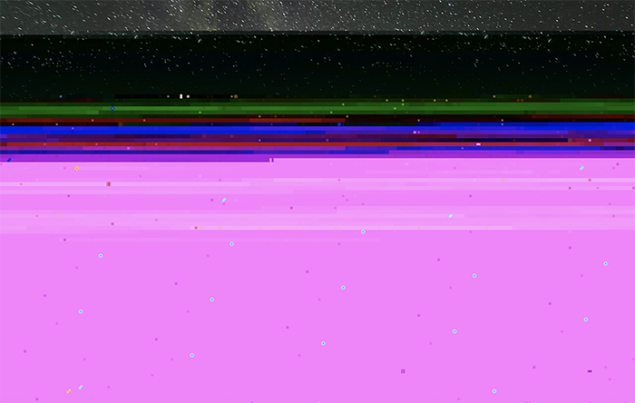
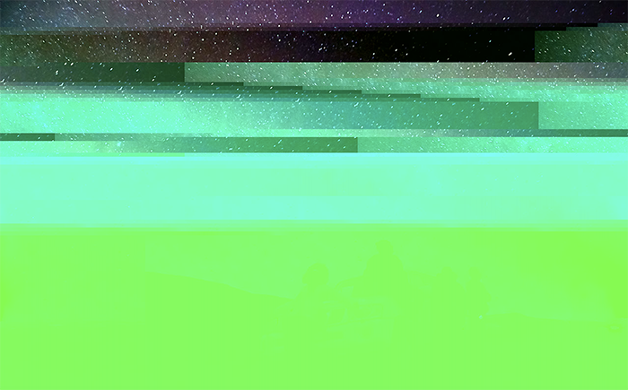

GLITCH
The objective of this Glitch Art project was to learn how to work with file formats and navigate how to break apart .jpeg, .png, .mp3, and other files.
Traveling during this time has been discouraged because of the pandemic, so I manipulated images of mountains, northern lights, and the stars to show the frustration many people are feeling about not being able to explore outside as much as they would like to. The first image was made with Audacity, and the last two were made with TextEdit.
Traveling during this time has been discouraged because of the pandemic, so I manipulated images of mountains, northern lights, and the stars to show the frustration many people are feeling about not being able to explore outside as much as they would like to. The first image was made with Audacity, and the last two were made with TextEdit.


